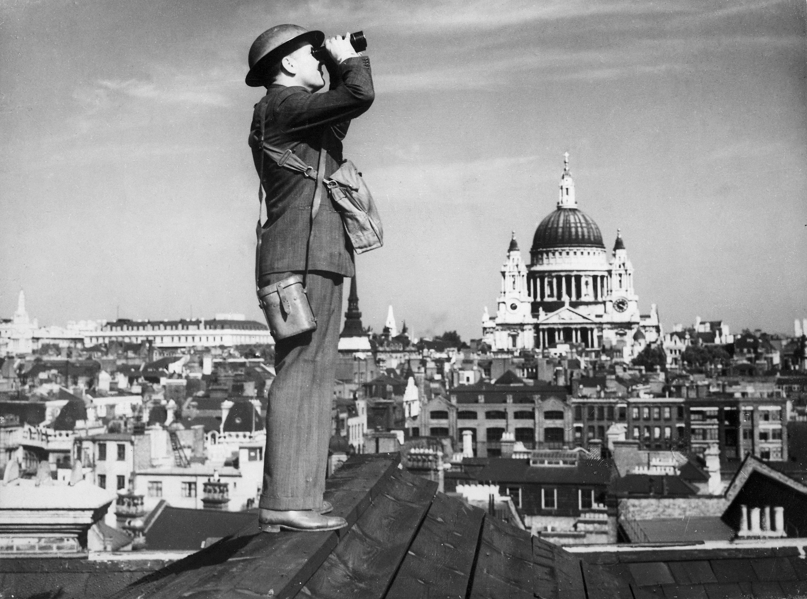

WORLD WAR II
ยุทธภูมิ Britain
26 พฤษภาคม 1940
มิถุนายน 1940
10 ก.ค. - 31 ต.ค. 1940
27 กันยายน 1940
ต้นปี 1941

10 กรกฏาคม - 31 ตุลาคม 1940 ยุทธภูมิ Britain
การต่อสู้ของสหราชอาณาจักรประกอบด้วย 4 ช่วง
-
ในช่วงเดือนกรกฎาคม Hitler ส่งเครื่องบินทิ้งระเบิดกองทัพของเขาไปโจมตีท่าเรือของอังกฤษ เป้าหมายของเขาก็เพื่อประเมินความเร็วและคุณภาพของการตอบสนองจากกองทัพอากาศ
-
ในช่วงเดือนสิงหาคม การโจมตีทางเรือยังคงดำเนินต่อไป แต่การโจมตีด้วยระเบิดนั้นมุ่งไปที่สนามบินกองทัพอากาศ
- The Blitz - ตั้งแต่วันที่ 7 กันยายน เมืองลอนดอนถูกทิ้งระเบิดอย่างหนัก Hitlerหวังว่าจะทำลายขวัญและกำลังใจของชาวอังกฤษ
- Night Bombing - ด้วยความล้มเหลวของการโจมตีด้วยระเบิดในเวลากลางวัน Hitlerเริ่มการโจมตีด้วยระเบิดในตอนกลางคืนในลอนดอนและเมืองอุตสาหกรรมสำคัญอื่นๆ กองทัพอากาศได้ป้องกันท้องฟ้าและเมื่อวันที่ 31 ตุลาคมการบุกก็หยุดลง